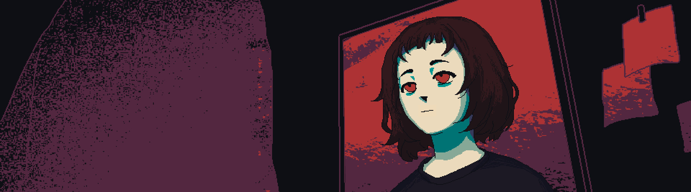

01
CVE disclosure repository
Github repository of CVE discoveries.
Vulnerbility Researcher
PROJECT ARCHIVE
REVERSE ENGINEERING / ANALYSIS / LOW-LEVEL RESEARCH / SECURITY / RECONSTRUCTION
Github repository of CVE discoveries.
Analysis report of the WannaCry's kill-switch mechanism.

GENERAL PROJECTS / TOOLS / EXPERIMENTS
Lightweight Debian-based desktop environment inspired by Serial Experiments Lain.
CLI tool that scrapes MyAnimeList's top anime rankings and randomly picks one for you to watch.